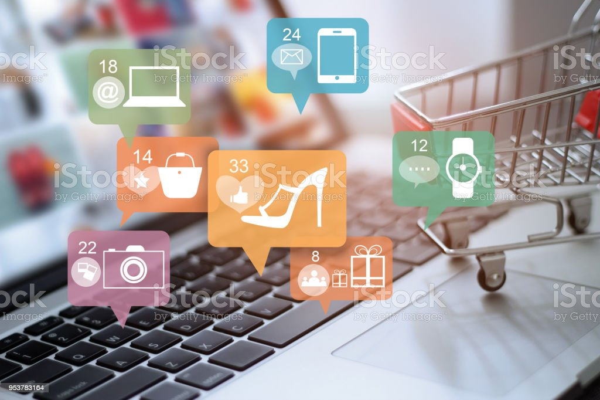

E-commerce Solutions
E-commerce (electronic commerce) is the activity of electronically buying or selling of products on online
services or over the Internet. E-commerce draws on technologies such as mobile commerce, electronic funds
transfer, supply chain management, Internet marketing, online transaction processing, electronic data
interchange (EDI), inventory management systems, and automated data collection systems. E-commerce is in
turn driven by the technological advances of the semiconductor industry, and is the largest sector of the
electronics industry.
E-commerce typically uses the web for at least a part of a transaction's life cycle although it may also use
other technologies such as e-mail. Typical e-commerce transactions include the purchase of products (such as
books from Amazon) or services (such as music downloads in the form of digital distribution such as iTunes
Store).[1] There are three areas of e-commerce: online retailing, electronic markets, and online auctions.
E-commerce is supported by electronic business.[2] The existence value of e-commerce is to allow consumers
to shop online and pay online through the Internet, saving the time and space of customers and enterprises,
greatly improving transaction efficiency, especially for busy office workers, but also saving a lot of
valuable time
Economic impact of the COVID-19 pandemic
The COVID-19 pandemic has had far-reaching economic consequences[1] including the COVID-19 recession, the second
largest global recession in recent history,[2] decreased business in the services sector during the COVID-19
lockdowns,[3] the 2020 stock market crash, which included the largest single-week stock market decline since the
financial crisis of 2007–2008 and the impact of the COVID-19 on financial markets,[4][5][6][7][8][9] the
2021–2022 global supply chain crisis,[10] the 2021–2022 inflation surge, shortages related to the COVID-19
pandemic including the 2020–present global chip shortage, panic buying,[11][12][13][14] and price gouging.[15]
It led to governments providing an unprecedented amount of stimulus. The pandemic was also a factor in the
2021–2022 global energy crisis and 2022 food crises.
Possible instability generated by an outbreak and associated behavioural changes could result in temporary food
shortages, price spikes, and disruption to markets. Such price rises would be felt most by vulnerable
populations who depend on markets for their food as well as those already depending on humanitarian assistance
to maintain their livelihoods and food access. As observed in the 2007–2008 world food price crisis, the
additional inflationary effect of protectionist policies through import tariffs and export bans could cause a
significant increase in the number of people facing severe food insecurity worldwide.[16]
Many fashion, sport, and technology events have been canceled or have changed to be online.[17][18] While the
monetary impact on the travel and trade industry is yet to be estimated, it is likely to be in the billions and
increasing.

Impact on markets and retailers
E-commerce markets are growing at noticeable rates. The online market is expected to grow by 56% in
2015–2020. In 2017, retail e-commerce sales worldwide amounted to 2.3 trillion US dollars and e-retail
revenues are projected to grow to 4.891 trillion US dollars in 2021.[43] Traditional markets are only
expected 2% growth during the same time. Brick and mortar retailers are struggling because of online
retailer's ability to offer lower prices and higher efficiency. Many larger retailers are able to maintain a
presence offline and online by linking physical and online offerings.[44]
E-commerce allows customers to overcome geographical barriers and allows them to purchase products anytime
and from anywhere. Online and traditional markets have different strategies for conducting business.
Traditional retailers offer fewer assortment of products because of shelf space where, online retailers
often hold no inventory but send customer orders directly to the manufacture. The pricing strategies are
also different for traditional and online retailers. Traditional retailers base their prices on store
traffic and the cost to keep inventory. Online retailers base prices on the speed of delivery.
There are two ways for marketers to conduct business through e-commerce: fully online or online along with a
brick and mortar store. Online marketers can offer lower prices, greater product selection, and high
efficiency rates. Many customers prefer online markets if the products can be delivered quickly at
relatively low price. However, online retailers cannot offer the physical experience that traditional
retailers can. It can be difficult to judge the quality of a product without the physical experience, which
may cause customers to experience product or seller uncertainty. Another issue regarding the online market
is concerns about the security of online transactions. Many customers remain loyal to well-known retailers
because of this issue.[45][46]
Security is a primary problem for e-commerce in developed and developing countries. E-commerce security is
protecting business' websites and customers from unauthorized access, use, alteration, or destruction. The
type of threats include: malicious codes, unwanted programs (ad ware, spyware), phishing, hacking, and cyber
vandalism. E-commerce websites use different tools to avert security threats. These tools include firewalls,
encryption software, digital certificates, and passwords.[citation needed]